What do you need
Data
Web tools
Case 1
Clinical profile
The case we present first, has a pedigree as follows:
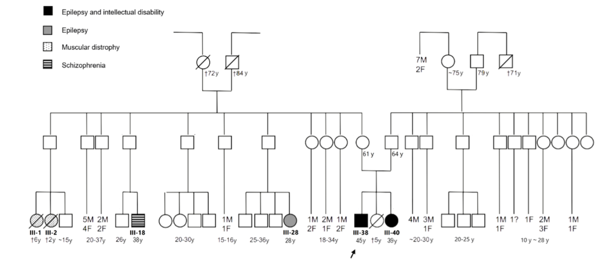The proband is the individual III-38 and he’s been diagnosed with epilepsy, intellectual disability, speech delay, progressive gait deterioration.
Download the data
Please use the link provided above to download the VCF file, originated from an NGS carried out on the proband. Select the folder tutorial data as indicated in the screenshot below
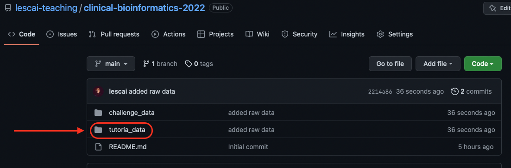Click on the folder for case01 and then click on the VCF file. In order to download it, choose raw data on the right hand side as indicated in the screenshot
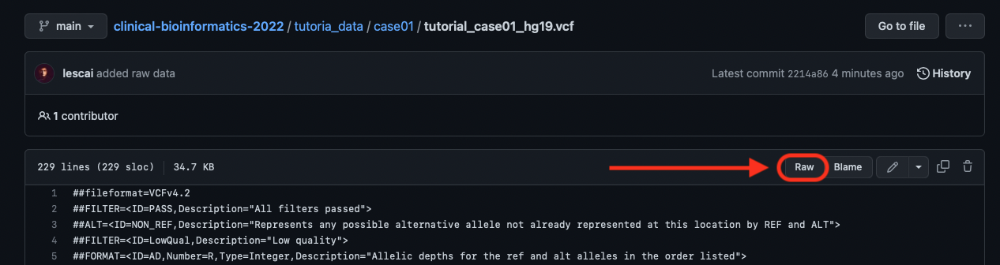and then from the menu of your browser use save as, in order to save the file on our computer, in your chosen location.
Now we are ready to begin our analysis.
Annotation of the variants
In order to identify the candidate causative variants, we need to gather sufficient information (predictions, literature, genomic context, protein information). This process is called annotation. To annotate our VCF file, we will use Ensembl VEP.
Our data have been aligned to an hg19 reference: this is something to be always careful about, in order to make sure the annotations match the position of the variants and the intervals of the genomic features. In order to choose the hg19/GRCH37 reference (they differ for the prefix chr of the chromosome name), we will select the appropriate link as shown in the screenshot:
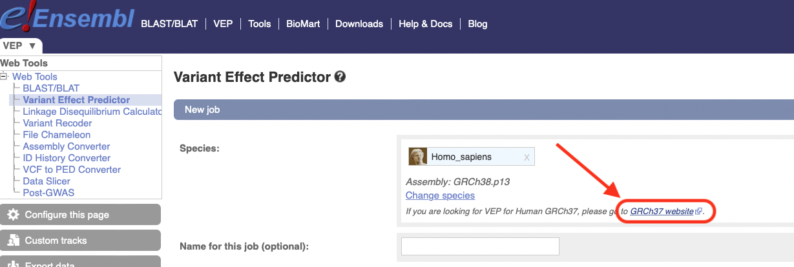There are many options now to choose from: follow your lecturer in order to discuss the importance of each one and its selection criteria. More detailed information for your reference, can be found here.
Before reviewing the results, it is important to remember the meaning as well as the prioritisation of the predicted consequences in terms of severity
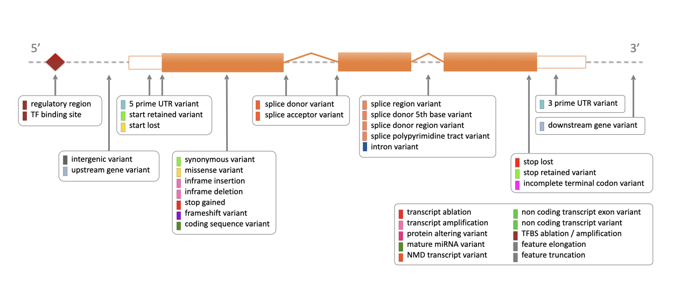with a detailed explanation at the ENSEMBL page.
Filtering the variants
Once you obtain the annotation results, you can click on the view link as indicated below
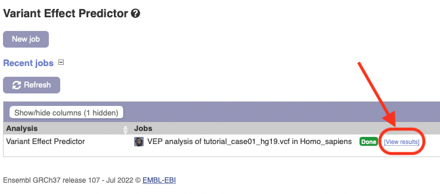review the information, and apply some filters.
In order to view all information in a single page, you should remember to choose all variants from the appropriate setting, and select the important columns you would like to visualise, as shown below:
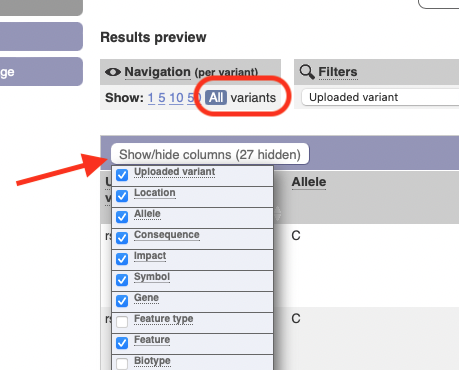The order of the filters one applies is a subjective choice: we will suggest here a workflow you can follow in order to narrow down your search.
- IMPACT
The category “impact” might be the easiest criterion to use first, since it roughly groups variants based on the predicted consequence they will have on a transcript. The category “HIGH” includes stop and frameshift, start variants and those overlapping the first 2bp of an intron/exon boundary, i.e. predicted to impact donor or acceptor functions in the splicing.
In this particular case, if we order by impact, the first variant appearing at the top of our list is rs1240335250.
We can identify the following information, in the annotations:
- This is a splice-donor variant, affecting the gene TDP2
- SpliceAI indicates an 89% probability of the variant causing a donor loss in the splice site
- Associated phenotypes include “Autosomal recessive cerebellar ataxia-epilepsy-intellectual disability syndrome due to TUD deficiency”, which is consistent with the clinical presentation and the mode of inheritance in the pedigree
- if we search the variant in the VCF file we will confirm it’s been sequenced as an homozygous (1/1), which is consistent with the inheritance mode we can observe on the pedigree (autosomal recessive)
In our selection based on the IMPACT category, we also identify another variant causing a frameshift in the OR1B1 gene. This variant is however also homozygous in our VCF but:
- it has been submitted in ClinVar and classified as benign
- if we follow the ClinVar submission from the link in the annotation we will see that criteria include a high population frequency in 1000 Genomes
- a similar frequency is reported in our annotation from gnomAD Exome data (45%)
In order to better search for additional variants with phenotype annotations, or inspect more in detail our results, we should download the data in a TXT format and load it in a spreadsheet, as indicated in the screenshot below:
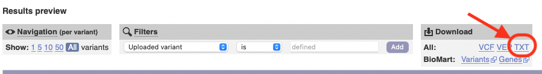NB: this is ok for the tutorial and challenge, but it is not recommended when you have hundreds of thousands of annotations.
Additional variant data
In order to confirm our choice, on the VEP results page we can also gather additional information if the variant has been previously described. In order to do that, we should click on the variant identifier link in the column Existing variant, and choose the additional link more about, as indicated in the figure:
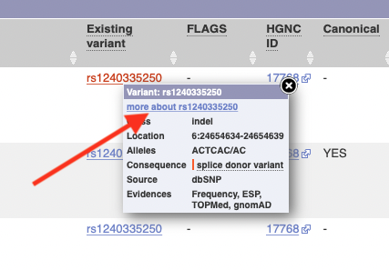This page, when information is available, will display additional data on the phenotype and even predicted 3D models of the protein where the variant might have a consequence.
Expression data
To go even more in depth, we can look into expression data on the GTEx Portal, and verify that the tissue expression of the affected transcript is compatible with our phenotype.
In order to do that, right on the GTEx homepage, we can search for the gene identifier (in our case ENSG00000111802)
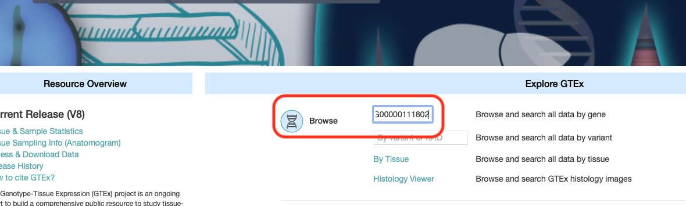Go straight to “exon expression”
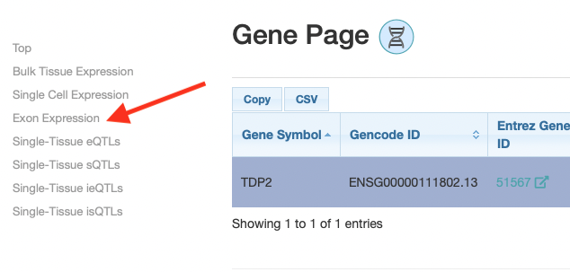And verify that while the canonical transcript is expressed pretty much everywhere, other transcripts affected by this change in splicing might be expressed in tissues compatible with our phenotype.

Case 2
Clinical Profile
This case presents a quite large pedigree, as follows:
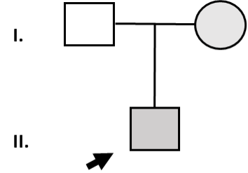The condition has been diagnosed as:
- II-1 (proband): delayed psychomotor development, intellectual disability, microcephaly, delayed speech and language development, cerebellar hypoplasia
- I-2: intellectual disability
Data download
As explained for the previous case, please use the folder tutorial02 in order to download the VCF file originated from an NGS carried out on this proband.
Annotation of the variants
We can annotate again the variants using VEP (be careful to use the GRCh37 version), as shown for the previous case.
Filtering the variants
If we follow a similar process, we should first rank the variants by IMPACT and inspect (or exclude) those with a HIGH value. Remember to select all variants on the left hand side of the top panel called results preview in order to order all variants we have annotated.
This approach gives us 2 variants:
- one stop_gained in the gene MOB3C
- one start_lost in the gene CCDC108
The second one (on CCDC108) is associated to a Non-syndromic male infertility, and *LoF Tool predicts the variant as benign. We will exclude this variant at this point.
The second variant is not associated to any phenotype in our annotation, and does not have a LoFtool prediction. It has however a quite high MAF in the general population (64%) as well as in gnomAD exomes (55%). We can inspect the expression of the affected transcript (ENST00000271139) for this gene (ENSG00000142961) on GTEx, and we will notice that it is only expressed in the testis (compatible with its associated phenotype)
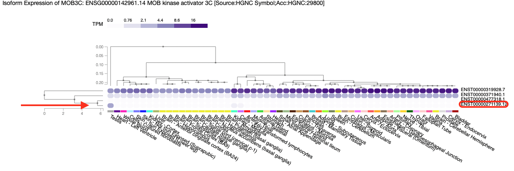In order to search the variants annotation for more details, we suggest to download the TXT file as shown above and open it in a spreadsheet.
We could continue our search by applying the following filters:
- exclude pure synonymous variants
- exclude intron, non-coding, upstream and downstream
- select protein coding transcripts only
At this stage, we still have 137 transcripts annotations.
We can search through known phenotypes and apply a conditional filter for some keywords like neuro or retardation (or intellectual, or mental, or disability). Phenotype Ontologies would be more precise, and a search on tools different from spreadsheets would allow more options.
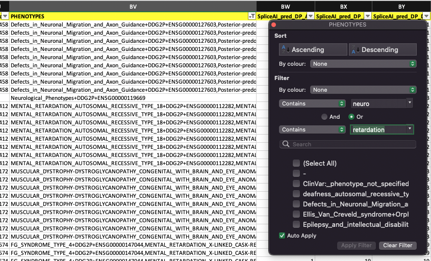This narrows down the list to 5 genes:
- MACF1
- IRF2BPL
- MED23
- POMT1
- CASK
Variations in MACF1 are compatible with the phenotype but they calculated as benign or tolerated by SIFT or POLYPHEN so we should exclude them.
Variations in IRF2BPL, MED23 and POMT1 have been previosly submitted to ClinVar as benign so we should exclude them too.
We are left with a variant in CASK, which is not present in gnomAD and it is classified as a LOW impact, synonymous variant but located in a splice region, although not within the 2bp boundary. SpliceAI gives a relatively solid prediction of this variant being a donor gain with 64% probability. The variant has been previously associated to a mental retardation, x-linked phenotype.
The genotype of the variant in the VCF file is compatible with the inheritance mode(s) we could identify from the pedigree provided.
Expression data
In this particular case, expression data do now guide us much into a confirmation because exon 2 which affected by the variant is expressed quite everywhere.
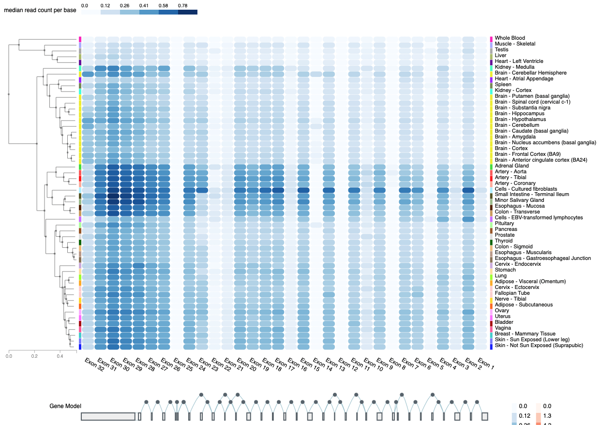